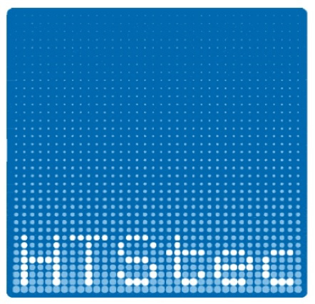
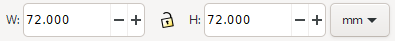
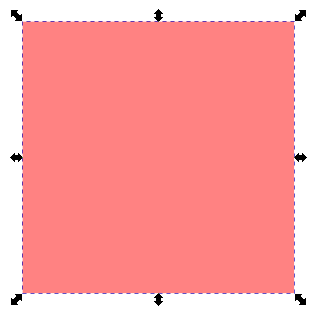
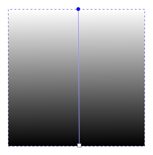
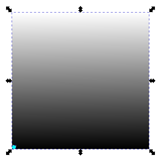
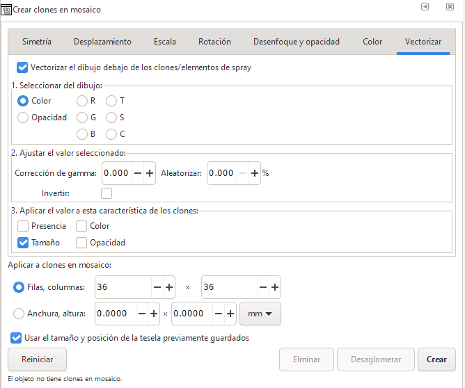
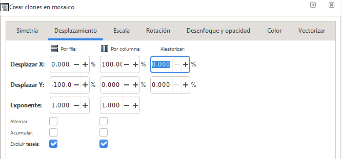
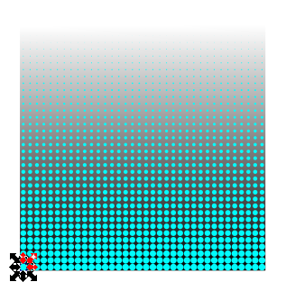
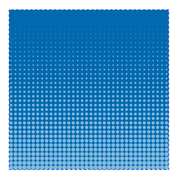
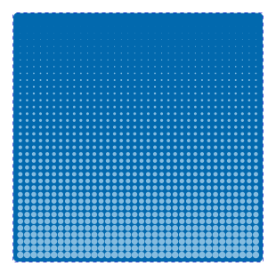

16. HTStec logo¶
{kind=link}
We open a new document with Inkscape.
We create a square and with the selection tool
  we changed its size to 72 millimeters horizontally and 72 millimeters vertically. In this way, the square will cover the entire area that we are going to fill with 36 2-millimeter circles.
we changed its size to 72 millimeters horizontally and 72 millimeters vertically. In this way, the square will cover the entire area that we are going to fill with 36 2-millimeter circles.We change the color of the square with a linear gradient of non-transparent white on top and non-transparent black on the bottom.
This gradient will be used to resize the circles based on color, so that the circles get smaller as the height increases.
Next we create a cyan blue circle and resize it to 2mm wide and 2mm high.
With the alignment tools
Object... Align and Distribute...we align the bottom edges and the left edges.Now select only the blue dot and choose the
Edit... Clone... Tile Clonesmenu tool.In the Vectorize tab we select the following options.
We restart by pressing the lower Restart button.
We activate Trace drawing below the clones.
We select by color
We apply the value to the Size of the clones
We select 36 rows and 36 columns of clones
In the displacement tab we choose the following options.
Shift Y -100% per row and Shift X 100% per column.
We continue pressing Create so that the mosaic of points is formed.
Now we can change the color of the dots and the background, taking the original logo as a model.
To change the color of the points, remember to delete the clone above the original point and change only the color of the original point. The other points will also change color automatically.
To continue we are going to increase the size of the bottom square. Select the square and choose the
Path...Enlargetool twice.Now we need to separate the clones created from the original figure so that we can individually change the color of the ones we want.
The operation is performed by selecting all the clones and using the
Edit... Clone... Disconnect Clonemenu tool. The operation will take several seconds to complete as there are many clones to separate.Once separated, we can select the clones we want and change their color to white. We will start with the first letter.
Remember to press the Shift key to select multiple points at once.
When we're done changing the color of the letter dots to white, the logo is finished.